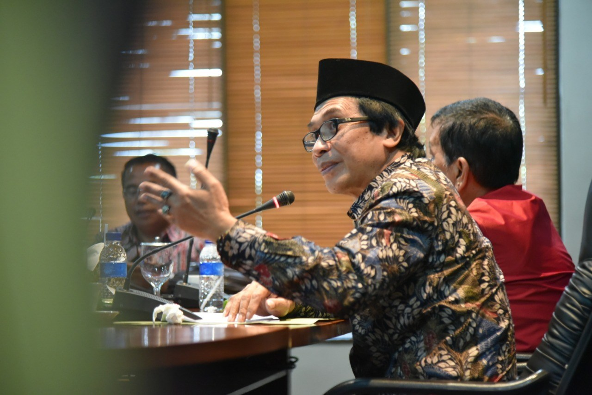

Kopi Jember Mendunia
Wabup Humbang Hasundutan Pelajari Kopi Jember
Kopi menjadi salah satu potensi Kabupaten Jember yang menarik perhatian dalam studi banding Pemerintah Kabupaten Humbang Hasundutan, Sumatera Utara. Lebih 30 tahun kopi Jember telah berada di Bumi Ulos ini.
Hal itu disampaikan Wakil Bupati Humbang Hasundutan Saut Parlindungan Simamora saat bertemu Wakil Bupati Jember Drs. KH. Abdul Muqit Arief, Kamis 8 November 2018, di kantor Pemerintah Kabupaten Jember.
Saut Parlindungan Simamora menjelaskan, komunitas unggulan Kabupaten Humbang Hasundutan adalah kopi yang berasal dari Kabupaten Jember, lebih 30 tahun lalu dengan nama Kopi Jember.
“Jadi kami berpikir, loh mulai dari dulu kopinya kopi Jember, tapi kita belum pernah nengok bagaimana keadaan sebenarnya kopi di Jember,” ungkap Saut Parlindungan Simamora.
Dari studi banding, Saut Parlindungan Simamora berharap mendapatkan lebih banyak ilmu pengetahuan untuk meningkatkan taraf hidup masyarakat, utamanya di bidang pertanian kopi.
Ia mengungkapkab, keunggulan kopi Jember tahan terhadap racun atau ulat. Hal ini tidak membuat petaninya capek untuk merawat. Kopi Jember pun sudah disilang dengan kopi Humbang Hasundutan.
Saat ini ada varietas baru, yang informasinya mampu meningkatkan produksi hingga 2 smapai 3 kali lipat. Tentu ini adalah kabar baru yang akan bermanfaat bila dibawa pulang ke Humbang Hasundutan yang penduduknya 85 persen petani, dengan 70 persen diantaranya menanam kopi.
Dalam pertemuan yang berlangsung hangat dan akrab itu, Bupati Humbang Hasundutan memberikan cindera mata berupa Ulos kepada Wabup Muqit Arief. Ulos menjadi penghargaan tertinggi dari masyaraka Batak.
Menanggapi Bupati Humbang Hasundutan, Wabup Muqit Arief menyampaikan, dalam studi banding ini untuk saling belajar tentang kopi.
Apalagi kopi Jember telah dikenal oleh petani Humbang Hasundutan sejak tahun 1985. “Jadi petani di Kabupaten Humbang sudah terbiasa dengan kopi Jember,” ujar Wabup Muqit Arief.
Ketika di Jember, kata Wabup Muqit Arief, bisa bertemu langsung dengan ahlinya dan melihat langsung kegiatan menanam bibit kopi hingga proses akhir.
Wabup mengaku pemberian cinderamata kali ini sangat luar biasa, karena pemberian ulos yang hanya diberikan untuk penghargaan tinggi. “Saya menerima sangat bahagia, sangat senang hati,” tuturnya.